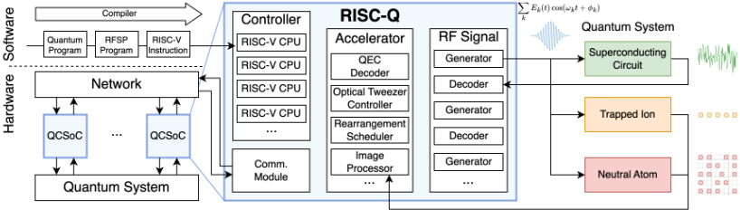
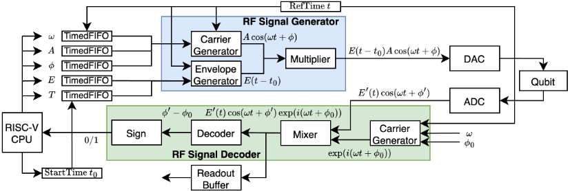
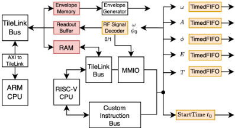
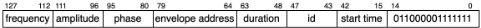

RISC-Q：兼容 RISC-V 的实时量子控制片上系统（QCSoC）生成器
论文针对量子计算对控制系统提出的微秒级反馈延迟、纳秒级定时精度与 GHz 信号控制等远超常规实时系统的需求，以及现有 QCSoC 方案工具链碎片化、缺乏设计自动化两大系统性问题，提出开源生成器 RISC-Q。方法上基于 SpinalHDL（Scala 元编程）实现高度参数化、模块化的 QCSoC 自动生成，控制器兼容 RISC-V ISA 以复用其编译器与软件生态，并借助 VexiiRiscv 插件框架以隔离插件方式添加自定义指令、利用 TileLink/tilelink.fabric 与 BusSlaveFactory 自动完成存储与 MMIO 集成。在 Xilinx ZCU216 RFSoC 上实现的原型仅用 11,549 行 HDL（较 QICK/QubiC 减少约 75%）即达到 500 MHz、16 DAC/8 ADC，性能与 QubiC 相当。论文还展示了条件门的 branchless 实现与用 C 编写的片上校准协议等软硬件协同设计能力。对团队而言，其生成器式参数化 RTL 与总线/寄存器自动化方法具有方法论借鉴价值，但应用领域与验证内容同团队存储/互连 IP 业务无直接重叠。
量子计算要求对大规模 qubit 系统进行精确实时控制（如超导 qubit 需 3-6 GHz 信号、纳秒级定时精度、微秒级闭环反馈延迟），远超常规实时系统能力；现有开源/商用 QCSoC 方案存在两个系统性问题：(1) 工具链碎片化，硬件专属控制架构与软件 API 造成厂商锁定、阻碍跨平台开发；(2) 设计自动化不足，研究者需手工实现底层控制架构并优化设计参数，难以扩展和适应快速演化的控制需求（如 QEC、mid-circuit measurement）。
提出 RISC-Q：基于 SpinalHDL 的开源 QCSoC 生成器，通过细粒度参数化（每 CPU 管理的 qubit 数、carrier generator 每周期采样数、envelope 存储分配、readout buffer 可选裁剪、三角函数实现 CORDIC/LUT 选择等）与接口抽象最大化组件复用；控制器兼容 RISC-V ISA，基于 VexiiRiscv 插件式框架以独立插件实现自定义指令（如单条 128 位指令配置全部 RF 信号参数），无需修改流水线核心代码；采用 TileLink 总线协议与 tilelink.fabric（类 Diplomacy 参数协商）库自动生成 arbiter、decoder、width adapter 等互连组件，并用 BusSlaveFactory 自动化 MMIO 寄存器映射；通过 timed FIFO 解耦 CPU 指令时序与信号生成时序，支持 branch-based/branchless 条件门两种实现切换与片上 C 语言校准协议。
RISC-Q 当前实现为 11,549 行 HDL 代码，相比 QICK 的 172,294 行与 QubiC 的 45,835 行，代码规模减少约 75%
原型在 Xilinx ZCU216 RFSoC 的 PL 上以 500 MHz 运行，控制 16 路 DAC 与 8 路 ADC（QubiC 为同频率同通道数；QICK 为 384 MHz、7 DAC/2 ADC）
FPGA 资源（LUT/FF）占用与 QubiC 相当且略高，两者均明显优于 QICK（Table I）
演示了条件门的 branchless 实现（预加载双路 timed FIFO + 控制寄存器选择）以降低流水线分支带来的延迟，以及在控制器上用 C 实现幅度校准协议以消除 host-controller 往返通信
信号生成延迟与反馈延迟未给出量化 benchmark，作者说明因架构差异且缺乏标准评估工具难以公平对比
据论文称是首个开源、兼容 RISC-V 生态的 QCSoC 生成器：以统一的 RISC-V base ISA 取代各系统碎片化的自定义指令集，复用成熟软件生态；借鉴 ML 加速器敏捷开发思想，用 SpinalHDL 元编程实现高度参数化与模块化的自动生成；通过 VexiiRiscv 插件机制在不修改处理器核心的前提下模块化扩展自定义指令，并用 TileLink/fabric 与 BusSlaveFactory 自动化存储与外设集成，从而显著降低开发工作量并支持软硬件协同设计空间探索（如分布式 vs 集中式架构、指令编码宽度的权衡）。
相关度级别：medium
命中能力域：2.2 RTL 设计与实现 | 2.7 EDA/验证自动化与 AI 辅助
理由：论文属于量子控制 SoC 领域，与团队 LPDDR/HBM4/UCIe 等存储与互连 IP 产品在协议、场景上无直接重叠，且全文未涉及 UVM/formal/覆盖率等验证方法学、时序收敛或物理实现内容，故不构成 high。但其核心方法论与团队能力域存在交集：生成器式参数化 RTL 设计、插件式自定义指令扩展、TileLink/fabric 自动互连生成与 MMIO/寄存器自动化，对应 2.2 中可复用 RTL 构建方式，也契合 2.7 中框架化设计自动化的思路，可作为团队多配置 IP 变体生成、CSR 自动化与内嵌 RISC-V 子系统维护的方法参考，故评为 medium。
建议动作：作为方法参考存档
arXiv:2505.14902v1 [cs.AR] 2025年5月20日
RISC-Q：兼容RISC-V的实时量子控制片上系统生成器
Junyi Liu、Yi Lee、Haowei Deng、Connor Clayton、Gengzhi Yang 与 Xiaodi Wu
马里兰大学帕克分校（University of Maryland, College Park）
xiaodiwu@umd.edu
摘要——量子计算对大规模量子比特系统的精确控制提出了严苛要求，例如微秒级延迟的反馈以及吉赫兹信号的纳秒级精度定时——这些需求远超传统实时系统的能力范围。量子控制快速演进且高度多样化的特性，使得专用硬件加速器的开发成为必然。尽管已有若干定制实时系统被开发出来以满足特定量子平台的严格时序约束，但它们在扩展以及适应日益复杂的控制需求方面面临重大挑战——这主要归因于碎片化的工具链以及对设计自动化的有限支持。
输运、动态光镊控制、原子装载/重排以及用于状态读出的高速图像处理——所有这些都需要专用的实时硬件解决方案。
为解决这些局限性，我们提出了RISC-Q——一个面向量子控制片上系统（Quantum Control System-on-Chip，QCSoC）设计的开源¹灵活生成器，具有与RISC-V生态系统兼容的编程接口。RISC-Q基于SpinalHDL开发，能够对高度参数化且模块化的QCSoC架构实现高效自动化，支持敏捷的迭代式开发，以满足量子控制不断演进的需求。我们证明，RISC-Q能够以显著降低的开发工作量复现现有QCSoC的性能，从而促进软硬件协同设计空间的高效探索，实现快速原型设计与定制。
量子计算的变革性进展，只有在系统能够可靠且高效地扩展时才能真正实现。在过去十年中，量子硬件在多种实现技术上取得了快速进展。尽管当今的量子计算机尚未达到实用水平，但其快速扩展已经加剧了对量子控制栈的需求。量子控制系统最初是为在严格受控的实验室环境中进行概念验证演示而设计的，如今必须演进以满足工业需求——提供前所未有的精度、时序准确性和可扩展运行水平。这一转变使它们不再仅仅是辅助硬件，而是成为实现实用、高性能量子计算的关键基础设施。
量子系统的基本控制需求已经超出了传统实时系统的能力范围，因而需要定制化的量子控制系统级芯片（Quantum Control System-on-Chip, QCSoC）解决方案。例如，超导量子比特需要具有纳秒级时序精度的吉赫兹信号控制，以及微秒级延迟的闭环反馈。虽然原子系统（如囚禁离子和中性原子）的时序约束相对宽松，但它们带来了其他苛刻的实时控制挑战，例如精确的离子。随着量子硬件的演进，日益复杂的控制需求不断涌现，成为活跃的研究前沿。一个典型的例子是量子纠错（quantum error correction, QEC）[1]，其中在相干时间内完成完整的症状测量、解码和纠正循环这一严苛需求仍然是一项关键挑战。线路中途测量（mid-circuit measurement）是另一项新兴的控制需求，它支持诸如实时反馈（例如 [2]）和动态线路执行（例如 [3]、[4]）等先进能力。可扩展的量子控制还需要资源高效的架构、分布式 QCSoC 协调以及与 GPU 的紧密集成，以支持先进的量子-经典处理。
尽管现有解决方案——包括开源项目（例如 [5]、[6]、[7]、[8]）、闭源项目（例如 [9]、[10]、[11]）以及商业系统（例如 Zurich Instruments、Quantum Machines、Qblox）——能够满足小规模量子系统的基本控制需求，但由于以下两个系统性问题，它们在支持快速演进和扩展的控制需求方面面临重大局限：（1）工具链碎片化，其中特定于硬件的控制架构和软件 API 造成了厂商锁定，阻碍了跨平台开发；（2）设计自动化程度有限，迫使研究人员手动实现底层控制架构并优化其设计参数，而无法利用高层设计工具。
受机器学习硬件加速器与专用计算内核领域敏捷开发成功经验的启发 [12], [13]，我们提出 RISC-Q——首个面向 QCSoC 设计的开源生成器，具有与 RISC-V 生态系统兼容的编程接口。我们预计，为异构量子平台确定最优控制架构需要进行广泛的设计探索。RISC-Q 通过对高度参数化且模块化的 QCSoC 架构实现高效自动化来促进这一过程，支持敏捷的迭代式开发，以探索软硬件协同设计空间，加速快速原型设计与定制。此外，通过提供统一且可扩展的平台，RISC-Q 促进了互操作性与社区协作，并推动量子控制系统设计中的共享创新。
RISC-Q 的开发始于对采用各种实现技术的量子控制系统进行通用建模。尽管这些系统在具体细节上各不相同，但它们都可以用经典数字组件实现逻辑控制、用模拟射频（RF）信号组件与
1
1 https://github.com/Wu-Quantum-Application-System-Group/RISC-Q
2
物理量子系统进行交互的方式来建模。图 1 给出了第 II 节中基于当前控制需求和未来可扩展性需求所开发的 QCSoC 的更详细建模。
RISC-Q 是一个用 SpinalHDL [14] 实现的模块化且灵活的 QCSoC 生成器。它支持细粒度参数化、接口抽象和灵活的外设集成，以最大化组件复用与适应性。此外，RISC-Q 集成了兼容 RISC-V 指令集架构（ISA）的控制器，借助更广泛的 RISC-V 软件生态系统来增强可扩展性与互操作性。
我们展示了一个面向超导量子计算机的全功能 QCSoC，它由 RISC-Q 设计并部署在 Xilinx ZCU216 RFSoC 开发板上。我们的 QCSoC 在频率、DAC/ADC 通道数和资源利用率方面达到了与 QICK [5]、QubiC [6] 等最先进系统相当的性能——同时显著降低了开发工作量与代码库规模（约 ∼ 75%）。作为代表性案例研究，我们聚焦于 RISC-Q 对测量步骤的实现，以说明其灵活的参数化与集成能力如何支持高效的设计空间探索和快速原型设计。最后，我们展示了 RISC-Q 如何支持由线路中途测量触发的条件门实现的协同设计，以及校准协议的直接片上执行，从而最小化通信开销并实现更快的反馈。简而言之，本工作做出了以下贡献：
物理需求：量子计算中广泛使用多种物理平台，例如超导电路、中性原子和离子阱。尽管底层物理机制各不相同，这些系统通常都使用射频（RF）模拟信号进行控制。与经典系统不同，量子系统对这些信号提出了严苛的实时要求——需要高频率、精确的相位相干性以及超低延迟——这是由于量子系统具有时间敏感且脆弱的特性。
例如，超导量子比特是对控制要求最为苛刻的平台之一，需要 3 - 6 GHz 范围内的控制信号。这些信号的相位决定了量子门的旋转轴，因此相位精度对于高保真度操作至关重要 [15]。在这些频率下维持相位相干性尤其具有挑战性。此外，由于超导量子比特的相干时间很短，测量解码和反馈控制必须在微秒级的延迟内完成 [16], [17]。先前的研究 [5]，
[6], [7] 已经证明，高性能数字控制系统可以生成满足量子系统严苛要求的模拟信号。
量子控制系统架构：图 1 展示了一种代表性的量子控制系统架构。系统组件按其功能进行分类，包括 RF 信号处理器、控制器、定制加速器和通信模块，具体说明如下。
量子系统由 RF 信号驱动，因此需要专门的模块来进行信号生成与解码。
1) RF 信号发生器：RF 信号发生器产生用于驱动量子系统的信号。在数字控制系统中，这些信号通过将离散采样值输出到数模转换器（DAC）来生成，由 DAC 将其转换为模拟信号。
RF 信号发生器是对实时性要求最为苛刻的组件。驱动信号的相位 ϕ k 直接影响所产生的量子门。当载波频率 ω k 处于 MHz-GHz 范围时，即使仅有一个周期的时序误差也会导致显著的相位偏差。发生器的要求因平台而异。对于超导量子比特，高载波频率（数 GHz）要求极其精确的时序。中性原子和离子阱系统通常需要频率较低但频谱复杂度更高的多音信号 [18]。
2) RF 信号解码器：在超导系统中，量子比特测量涉及发送读出 RF 信号并提取反馈 RF 信号的相位信息。由于量子纠错和动态量子电路等任务中的实时反馈需要测量结果，解码过程的延迟至关重要。此外，读出信号中的噪声会带来结果出错的可能性，因此解码精度同样重要。
标准流程包括对反馈信号的 I/Q 分量进行解调，随后通过低通滤波提取相位 [15]。机器学习方法也被用于提升性能 [19], [20]。
控制器为量子控制系统提供可编程接口。它必须支持不同实验协议所需的多样化信号序列和反馈逻辑。通用CPU常被用于实现灵活的软件定义控制而无需硬件重新设计，这使其成为控制器的自然选择。
一个关键需求是建立在经过充分测试的指令集架构（instruction set architecture, ISA）之上的稳定且灵活的编程接口。这确保了成熟的软件生态系统，并使控制软件能够在迭代式硬件修订和协作开发周期中保持可复用性。
除软件灵活性外，控制器还必须集成异构组件，包括RF处理器和定制加速器。它还必须满足严格的实时约束，包括相位敏感操作的纳秒级精确时序、数百兆赫兹的时钟频率以匹配RF信号处理需求，以及微秒级反馈延迟以支持量子纠错等实时协议。

尽管通用控制器提供了可编程性，但在实时约束下处理计算密集型任务时可能力不从心。为解决这一问题，系统中集成了定制加速器，以承担量子控制协议所需的高强度计算。
4) 重排调度器（Rearrangement Scheduler）：在中性原子系统初始化过程中，原子以概率方式装载进光阱，常常导致阵列仅被部分填充。因此需要进行重排，即移动原子以填充空位，从而实现所需的量子比特布局。
传统方法是将阵列图像发送至PC，计算出移动调度方案后再传回控制系统。这种往返通信成为延迟瓶颈。近期的研究工作提出在控制系统内部直接实现硬件加速的重排调度，从而省去了耗时的数据传输 [22], [23]。
实用的量子计算涉及对数千至数百万个量子比特的控制，这就需要采用分布式架构 [24]。系统中的每个节点都需要一个通信模块来交换数据并同步操作。
通信任务包括共享测量结果、下发门指令以及在各个控制器之间同步时钟。例如，量子纠错（QEC）协议需要实时共享测量结果，以计算错误症状并施加纠正 [17]。因此，实现高保真度需要极低延迟的通信。
时钟同步同样至关重要：控制器之间的相位相干性依赖于精确的时间对齐。因此，通信模块必须支持高精度同步协议。
现有的开源量子控制系统在架构和实现选择上已经展现出显著的多样性。例如，QubiC [5] 采用分布式架构，每个量子比特由一个专用处理器控制，从而简化了每个处理器的控制逻辑并降低了硬件复杂度。相比之下，QICK [6] 采用集中式架构，由单个处理器管理多个量子比特，降低了软件复杂度并简化了跨通道的协调。
这些系统在指令编码和控制策略上也各不相同。QubiC 使用单条 128 位指令并行配置射频（RF）信号发生器的所有参数，实现了低控制延迟。而 QICK 则使用 64 位指令逐个配置每个参数，提供了更大的编程灵活性。由于这些方法上的差异，两者的工作频率也有所不同：QubiC 运行在 500 MHz，而 QICK 运行在 384 MHz。
架构、实现与参数的组合构成了量子控制系统庞大的设计空间。高效地探索这一空间，对于在可用硬件资源范围内满足量子实验的严苛实时约束至关重要。
4
以量子纠错为例来进行说明。在架构上，需要采用分布式控制协议来收集测量结果并对大量量子比特执行症状译码。在实现层面，有多种译码算法可供选择，每种算法具有不同的性能特征。例如，表面码可以使用并查集（union-find）算法 [25]、最小权重完美匹配 [26], [21]、张量网络缩并 [27] 或基于机器学习的方法 [28], [29], [30] 进行译码。
尽管已存在诸如 [21] 中的开源译码器，但将其集成到控制系统中仍需要大量的工作。集成时必须考虑译码器如何被触发和控制——是通过存储器映射 I/O、自定义指令还是专用控制器——并在复杂度与实时性能之间进行权衡取舍。参数调优进一步扩展了设计空间，因为不同的码规模和 QEC 协议会引入不同的时序与资源约束。
为了有效地驾驭这一复杂的设计空间，一个高效且灵活的设计工具必不可少——该工具需支持架构定制、模块化实现和参数驱动的优化。RISC-Q 正是为满足这一需求而开发的，它使量子控制器设计图景的敏捷且迭代式的探索成为可能。
RISC-Q 是一个模块化且灵活的生成器，用于生成兼容 RISC-V 指令集架构（ISA）的量子控制片上系统设计。它采用 SpinalHDL [14] 开发，这是一种高级硬件描述语言（HDL），通过 Scala 中的元编程支持广泛的参数化和模块化硬件设计。通过为软件与硬件双方提供高级抽象和接口，RISC-Q 解耦了二者的设计流程，增强了跨组件的可复用性，并促进了量子控制系统的协同开发。
量子算法通常以量子程序的形式实现，这些量子程序描述量子电路，而量子电路是量子门的序列。由于量子系统由射频（RF）信号驱动，每个量子门在物理上通过相应的 RF 信号序列来实现。这些序列被编译为 RF 信号处理程序，后者基于预定义输入和基于测量的反馈，实时配置 RF 信号处理器。
将用 OpenQASM 3 [31] 编写的量子程序中的量子门和测量替换为直接控制底层 RF 信号硬件的外部 RF 指令，即可得到一个说明性的 RF 信号处理程序示例。这些程序不仅负责执行量子电路，还负责诸如量子纠错（QEC）和校准等关键控制任务——二者都需要分支、算术和存储器操作。
许多现有的量子控制系统采用自定义指令集来对 RF 信号处理进行编程 [7], [6], [5]。尽管这些领域专用指令集对特定硬件平台行之有效，但它们造成了碎片化的软件生态系统，需要为每个系统配备专用的编译器、驱动程序和库。
尽管量子专用操作各不相同，但大部分经典指令——例如算术、分支和存储器访问——在各平台之间是通用的。这促使人们采用共享的基础 ISA。RISC-V 的开放性和可扩展性使其成为量子控制器设计的理想基础。
RISC-Q 生成兼容 RISC-V ISA 的控制器，从而能够复用更广泛的 RISC-V 软件生态系统，包括编译器、库和开发工具。所生成的控制器提供熟悉的裸机编程接口。诸如 RF 信号处理器和加速器等量子专用外设通过存储器映射 I/O 或自定义指令进行控制，其接口通过可复用的 C 库和驱动程序进行抽象。
因此，RF 信号处理程序可以用 C、C++ 或 Rust 等高级语言编写，使用标准工具链编译为 RISC-V 指令，并直接在 RISC-Q 生成的兼容 RISC-V 的控制器上执行。这种兼容性使应用程序代码能够在不同的硬件实现和量子实验之间复用，并为未来面向量子硬件的操作系统奠定了基础。借助开源工具链和现代开发工作流，RISC-Q 提升了底层量子控制软件的可复用性和可扩展性。
虽然某些组件在各类量子系统中是通用的，但不同的物理平台往往带来独特的硬件需求。用于囚禁离子或中性原子的 RF 信号发生器可能比超导量子比特所用的需要更多频率分量，而后者则要求更高的载波频率。因此，控制器必须支持灵活集成多种外设，包括图 1 中的 RF 信号处理器和定制加速器。
受 VexiiRiscv [32] 的启发，RISC-Q 便于实现灵活的外设集成。它支持两种集成方式：存储器映射输入/输出（MMIO）和定制指令。
MMIO 是一种广泛使用的方法，其将外设端口映射到特定的存储器地址。例如，要设置 RF 信号发生器的频率，可通过 RISC-V 的 sw 指令向指定地址写入一个数值。类似地，译码器输出可通过 lw 指令读取。RISC-Q 构建于 SpinalHDL 的 TileLink 库之上，允许以最小的配置开销将外设进行存储器映射。
然而，MMIO 可能引入延迟和时序抖动，从而可能违反量子控制的严格实时约束。为解决这一问题，定制指令提供了一种更快的替代方案。例如，QubiC [5] 实现了一条专用指令来配置所有 RF 信号发生器参数，将控制延迟减少了若干个周期。
为支持广泛的硬件需求，定制指令必须以模块化、可扩展的方式实现。
5
这对流水线处理器而言尤为具有挑战性，因为处理一条指令会跨越多个流水线阶段。在此类架构中，传统上添加或修改指令需要编辑跨越译码、执行和写回阶段的多个文件，使得这一过程容易出错且难以维护。
RISC-Q 通过采用 VexiiRiscv 的基于插件的框架并利用 SpinalHDL 的流水线 API 来应对这一挑战，该 API 提供了对流水线各阶段硬件信号的细粒度访问。这使得定制指令能够以模块化的方式在独立文件中实现，并支持参数化的流水线阶段，而无需修改核心处理器代码库。
这种设计促进了协作开发，简化了维护，并使硬件特性能够在不同项目之间复用，使 RISC-Q 成为集成量子专用外设的健壮且可扩展的平台。
除了外设类型各异之外，每个外设的内部实现在不同量子实验之间也常常有所不同。RISC-Q 支持细粒度的参数化和接口抽象，以最大化组件的复用性与适应性。
例如，射频（RF）信号发生器和解码器都需要高频载波发生器，但它们对吞吐量和延迟的要求可能不同。参数化的载波发生器可以针对这些不同的约束进行定制，而无需重复设计工作。
SpinalHDL 为参数化提供了丰富的支持，包括组件接口和子组件实现。这使得开发人员能够以最少的修改将单一组件设计适配到广泛的应用场景中。
图2 展示了 RISCQ 的软件和硬件栈。凭借对开放工具链的兼容性、灵活的外设集成以及丰富的参数化支持，RISCQ 为量子控制系统设计提供了一个可扩展且可复用的基础。
RISC-Q 旨在面向广泛的量子平台生成量子控制片上系统，并同时支持现场可编程门阵列（FPGA）和专用集成电路（ASIC）两种实现方式。作为初步演示，我们聚焦于一个专为超导电路定制的原型。此类系统在各类量子平台中提出了最为严苛的实时性要求之一，但通常所需的领域专用加速器较少。这使其成为验证 RISC-Q 时序与集成能力的理想起点。
我们的原型实现于 Xilinx 射频片上系统（RFSoC）之上，这是一类在现代量子控制系统中被广泛采用的器件 [7], [6], [5]。RFSoC 集成了多核 ARM 处理系统（Processing System, PS）与被称为可编程逻辑（Programmable Logic, PL）的高性能 FPGA，并包含多达 16 个射频数模转换器（DAC）和模数转换器（ADC）。我们的量子控制片上系统（QCSoC）原型针对 Xilinx ZCU216 RFSoC 评估板的 PL 进行综合，该评估板为复杂的量子实验提供了充足的射频 I/O 与逻辑资源。与 RISC-Q QCSoC 的运行时通信由 ARM 处理器借助 AXI 互连进行协调。我们采用 PYNQ [33] 库来简化运行于 PS 之上的主机软件与 PL 中的可编程硬件之间的交互。这一设置实现了以基于 Python 的高级方式对底层 QCSoC 进行控制，从而简化了开发与调试。
| Software....Hardware.... | Quantum Programs.Quantum Compilers.RF Signal Processing Programs.Libraries.RISC-V Compilers.RISC-V Instructions.RISC-Q Controller.Memory Map I/O.Parameterized Peripherals.Digital-to-Analog Interface.Quantum System | Drivers....Custom Instructions... |
|---|
| Software....Hardware.... | Quantum Programs.Quantum Compilers.RF Signal Processing Programs.Libraries.RISC-V Compilers.RISC-V Instructions.RISC-Q Controller.Memory Map I/O.Parameterized Peripherals.Digital-to-Analog Interface.Quantum System | Drivers....Custom Instructions... |
尽管我们已实现了一个功能完备、性能与 QubiC [5] 和 QICK [6] 相当的超导量子比特 QCSoC（参见第 V 节），但出于说明目的，我们将以 RISC-Q 如何实现超导量子比特的测量逻辑作为代表性示例进行描述。
量子比特测量逻辑的数据流如图 3 所示。为了测量超导量子比特，会向读出耦合器发送形如 E ( t ) A cos( ωt + ϕ ) 的读出脉冲。返回信号携带有关量子比特状态的信息，该信息编码在反射波形的相位 ϕ ′ 中。
准确且低延迟地提取 ϕ ′ 对于反馈控制协议至关重要。这需要紧密编排的信号生成与解码序列——所有这些都必须在硬件中以确定性时序执行。
测量序列首先由控制 CPU 指定测量起始时间 t 0 和持续时间 T，并以所需参数配置 RF 信号发生器。虽然信号发生器是完全流水线化的，但每个参数在输出端生效之前都会经历不同的延迟。因此，必须精确地对参数进行定时，以使其效果同步。为解决这一问题，我们采用定时 FIFO 来缓冲参数，并根据 t 0 及其各自的延迟将其释放。该机制将信号发生器的时序约束与 CPU 指令的时序解耦。这种解耦还使得单个 CPU 能够协调多个量子比特通道，正如 QICK [6] 所展示的那样。在读出方面，RF 信号解码器必须配置适当的载波频率与相位。在校准例程期间，还可以将原始读出信号捕获到读出缓冲器中，以辅助解码器逻辑的参数调优。
6
前文所述的测量与控制逻辑涉及大量可配置参数，这些参数需根据具体实验的需求进行选择。RISC-Q 支持对组件进行细粒度的参数化，以确保高效复用、可扩展性和性能调优。下面我们介绍几个具有代表性的参数：
1) 每个 CPU 的量子比特数：得益于定时 FIFO 提供的解耦，信号生成可以提前调度，从而使单个 CPU 能够控制多个量子比特。这降低了硬件资源占用并简化了软件开发。然而，单个 CPU 所能支持的量子比特数量取决于具体的实验协议，因为所有对时序敏感的信号都必须相对于已知的起始时间预先调度。RISC-Q 提供了一个参数来决定分配给每个 CPU 的量子比特数量。
2) 载波发生器每周期采样数：如图 3 所示，系统中有两个载波发生器——分别位于 RF 信号发生器和解码器中。由于 RF 接口的采样率不同，这些模块必须以不同的数据速率运行。例如，当 CPU 和 RF 信号处理器运行在 500 MHz，而 DAC 和 ADC 分别工作在 8 GHz 和 2 GHz 时，系统必须每周期向 DAC 提供 16 个采样点，并每周期从 ADC 接收 4 个采样点。因此，两个载波发生器必须分别每周期产生 16 个和 4 个采样点。RISC-Q 提供了一个支持不同采样率的参数化载波发生器，从而可在两条信号路径中实现复用。
3) 包络存储器：包络发生器必须提供高吞吐量的幅度包络，每周期提供 16 个采样点用于与载波信号混频。一种常见的实现方式是将预先计算好的包络存储在存储器中，并每周期读取多个采样点。然而，存储大量较长的包络——尤其是对于控制多个量子比特的系统——可能会消耗大量存储资源并成为限制因素。为解决这一问题，RISC-Q 允许为每个信号发生器可配置地分配包络存储器，使设计者能够根据实验需求权衡存储器的使用。
4) 读出缓冲器：在校准期间，通常需要记录原始读出波形以确定最优的解码参数。读出缓冲器用于捕获这些数据，但代价是大量的存储器消耗，这可能与包络发生器等其他模块产生资源竞争。RISC-Q 允许通过参数选择包含或排除读出缓冲器，从而在校准完成后、不再需要这些资源时，将存储器资源重新分配。
5) 三角函数的实现：每个载波发生器都包含一个用于计算三角函数（例如正弦和余弦）的模块。不同的实现方式在延迟与资源占用之间存在权衡。例如，基于查找表的方法可提供低延迟，但会消耗更多存储器；而 CORDIC 算法则以更高的延迟为代价来减少存储器占用。RISC-Q 支持通过参数化方式选择三角函数的实现。此外，借助 SpinalHDL 的高层级参数化，RF 信号发生器的流水线结构会根据所选实现的延迟自动调整。这种灵活性使开发者能够根据需求针对时序或资源约束进行优化。
RISC-Q 利用基于 SpinalHDL 的自动化机制来简化外设与片上存储器的集成，同时改善了内部通信以及与量子系统的接口。
1) 存储器集成：量子控制系统中的许多组件都需要专用的存储器模块。例如，如图 3 所示，RISC-V CPU 使用 RAM 存储程序和数据，RF 信号发生器使用存储器存储包络，而 RF 信号解码器则需要一个缓冲区来捕获原始测量数据以供离线分析。这些存储器通常使用 RFSoC 上可用的块存储器（Block RAM，BRAM）实现。
除了被各自关联的组件访问之外，这些存储器还必须能够从 ARM 处理器进行访问，以支持运行时配置和数据读取。例如，RF 信号处理程序必须写入 CPU RAM，包络数据需要加载到信号发生器中，而测量结果则需要从读出缓冲区中读取。
由于存储器配置往往随实验需求而变化，手动管理这种集成既容易出错又耗时。RISC-Q 采用 TileLink 总线协议 [34] 来解决这一问题，该协议是 RISC-V 生态系统中被广泛采用的标准。如图 4 所示，各存储器模块连接到一个 TileLink 互连，该互连与 ARM 侧的 AXI 总线对接。
这一集成借助 SpinalHDL 中的 tilelink.fabric 库得以实现，该库是一个类似于 Diplomacy [35] 的参数协商框架。该库根据所连接节点的参数自动生成必要的 TileLink 组件——包括仲裁器、解码器、位宽适配器和缓冲器。将新的存储器挂载到特定地址只需几行代码即可完成。这一基础设施为带有可从外部访问存储器的外设提供了无缝且灵活的存储器集成。
2) 存储器映射输入输出（MMIO）：为了配置信号参数并读取测量结果，CPU 必须访问外设端口，例如连接到信号发生器的参数 FIFO 以及解码器中的读出接口（图 3）。一种常用的方法是 MMIO，它将外设寄存器映射到 CPU 的地址空间中，从而能够通过标准的加载/存储指令进行访问。然而，为大量端口手动构建 MMIO 总线——尤其是在硬件定制的多次迭代过程中——可能既繁琐又容易出错。RISC-Q 提供了基于 SpinalHDL 的 BusSlaveFactory 库的自动化解决方案。开发者使用一个工厂类为每个实例化的外设注册（端口，地址）对。该库会基于 TileLink 协议生成路由读写操作所需的硬件逻辑。
7


结合灵活的存储器集成，这一 MMIO 基础设施使面向特定实验的外设能够以极少的工作量快速完成原型开发。
3) 自定义指令：虽然 MMIO（内存映射输入输出）为外设访问提供了一种灵活且通用的方式，但它可能引入延迟并限制吞吐量——尤其是在启动单个操作需要写入多个参数的情况下。为了优化实时性能，QubiC 采用了一种 128 位的自定义指令，将所有脉冲参数编码其中 [24]。
为了支持这种可扩展性，RISC-Q 采用了 VexiiRiscv 处理器框架，该框架借鉴 VexRiscv [36]，采用基于插件的架构。在这种模型中，自定义指令可以实现为独立的插件，并可访问处理器内部信号，从而无需修改译码、执行等核心流水线模块。遵循这一方法，RISC-Q 实现了一条自定义的 128 位指令，仅需一条指令即可配置发射 RF 信号所需的全部参数。该指令格式如图 5 所示。

此外，门级指令集——例如 [9]、[37] 中所使用的指令集——可以通过这种可扩展的指令接口，将门操作映射到特定的信号参数来实现。
由于 RISC-Q 控制器遵循 RISC-V 指令集架构（ISA），因此可以使用任何能够编译为 RISC-V 的语言对其进行编程。在我们的原型中，我们使用 C 语言来实现控制软件。基于内存映射输入/输出（MMIO）的参数访问通过向特定内存地址写入来完成。例如，将第 7 个 RF 信号发生器的相位设置为 π/2 可以写作：
* ( v o l a t i l e i n t 3 2 _ t * )SG_PHASE_ADDR(7) = PHASE_PI ( 0 . 5 ) ;
其中，SG_PHASE_ADDR 根据索引 7 计算出相位寄存器的地址，PHASE_PI 计算相位的定点表示。类似地，可以通过以下方式从第 7 个解码器读取测量结果：
i n t r e s u l t = * ( v o l a t i l e i n t 3 2 _ t * )RD_RES_ADDR( 7 ) ;
这种裸机编程模型使得量子控制软件可以用 C、C++ 和 Rust 等广泛使用的高级语言编写。借助这些语言的抽象能力以及 RISC-V 工具链，开发者可以构建可跨硬件平台移植的可复用量子控制库，从而实现协作式、模块化的软件开发。
这种兼容性为在控制器上直接实现复杂的量子控制协议——例如校准例程和量子纠错（QEC）——奠定了基础，从而避免了与处理单元之间往返通信所带来的延迟。它为开发更先进的量子控制软件栈开辟了道路，最终将促成量子操作系统的出现。
总而言之，RISC-Q 的实现展示了设计自动化、模块化架构以及与行业标准工具链的兼容性如何简化量子控制片上系统（SoC）的开发。通过利用 SpinalHDL 进行外设参数化与集成、利用 TileLink 实现灵活互连、利用 RISC-V 提供标准化编程接口，RISC-Q 实现了高效、可伸缩且可扩展的控制系统设计。这一基础支持快速原型开发，促进软硬件协同设计，并为探索广泛的量子控制应用提供了多功能平台。
8
本节将 RISC-Q 生成的原型 QCSoC 与面向超导量子比特的最先进开源控制系统进行比较评估。我们评估了其硬件性能与资源效率。我们还通过两个案例研究展示了 RISC-Q 的新能力：条件门的软硬件协同设计以及片上校准协议的实现。
我们功能完备的 QCSoC 复现了面向超导电路的领先开源控制系统（包括 QICK 和 QubiC）的核心功能与性能，并通过高层次设计自动化显著降低了开发工作量。
1) 开发工作量：为了提供直观的比较，我们以硬件描述语言（HDL）代码行数来量化硬件设计复杂度。RISC-Q 的当前实现包含 11,549 行 HDL 代码，而 QICK 为 172,294 行，QubiC 为 45,835 行。
尽管 QICK 和 QubiC 的代码库中包含可能使其行数偏高的遗留模块和未使用组件，RISC-Q 在代码量上仍表现出大幅缩减。更重要的是，其模块化、可扩展的架构使得无需修改现有组件即可添加新外设，从而提升了可维护性和可扩展性。
2) 性能：虽然信号生成延迟和反馈延迟是量子控制的关键性能指标，但由于架构各异且缺乏标准评估工具，公平的基准测试仍然困难。因此，我们比较时钟频率和支持的射频（RF）通道数等核心系统特性。
我们由 RISC-Q 生成的原型工作在 500 MHz，控制 16 个数模转换器（DAC）和 8 个模数转换器（ADC）。QubiC 在相同频率下支持相同数量的通道，而 QICK 工作在 384 MHz，具有 7 个 DAC 和 2 个 ADC。
3) 硬件资源占用：我们在表 I 中考察了所有系统的现场可编程门阵列（FPGA）资源（例如查找表（LUT）、触发器（FF））利用率。RISC-Q 生成的 QCSoC 的资源消耗比 QubiC 略多但两者相当，且均远优于 QICK。
| LUT | FF | DACs | LUT/DAC | FF/DAC | |
|---|---|---|---|---|---|
| QICK [6] | 106935 | 175769 | 7 | 15276 | 25110 |
| QubiC [24] | 60996 | 119590 | 16 | 3812 | 7474 |
| RISC-Q | 74551 | 172925 | 16 | 4659 | 10808 |
| | LUT | FF | DACs | LUT/DAC | FF/DAC |
条件门（conditional gate）是动态量子电路中的常见结构，其门的执行取决于先前电路中途测量的结果。一个简单的例子是快速复位（fast reset），即通过测量量子比特将其复位到 | 0 ⟩，若测量结果为 1，则有条件地施加一个 X 门。借助 RISC-Q，用户可以灵活地对这类门的实现进行协同设计，在延迟与吞吐量之间进行权衡。
基于分支（branch-based）的实现方式被 QICK 和 QubiC 等系统所采用，可能因流水线停顿而在流水线处理器上引入延迟。尽管分支预测在经典计算中十分有效，但由于测量结果固有的随机性，它在量子控制中的效果要差得多。
为解决这一问题，RISC-Q 还支持一种无分支（branchless）的替代方案，通过避免控制流改变来降低延迟。其实现方式是将两个候选门预先加载到馈送射频（RF）信号发生器的两组并行定时先进先出（FIFO）队列中。随后，由一个控制寄存器根据测量结果选择激活的路径，该结果通过内存映射输入输出（MMIO）写入：
i n t r e s u l t = * ( v o l a t i l e i n t 3 2 _ t * )RD_RES_ADDR( 7 ) ; * ( v o l a t i l e i n t 3 2 _ t * )MULTIPLEX_REG_ADDR(7) = r e s u l t ;
这种方法完全避免了分支，从而降低了延迟，但由于预加载复杂度的增加，可能以牺牲吞吐量为代价。
RISC-Q 的模块化架构和灵活的软件接口使开发者能够根据实验对延迟和吞吐量的要求，轻松地在基于分支与无分支的实现之间进行切换。
量子系统对环境波动和内部波动都极为敏感，需要频繁地重新校准射频（RF）信号频率和幅度等控制参数。近期的研究工作 [38]、[39] 已证明，轻量级闭环协议能够在长时间实验中有效维持校准。尽管这些协议在计算上高效，但它们通常依赖主机与控制器之间的通信来完成校准，这在快速反馈回路中可能成为瓶颈。
片上校准通过消除主机与控制器之间的数据传输来解决这一问题，从而实现更快、响应更及时的校正。然而，在现有控制系统上直接实现校准协议具有挑战性，因为这些系统需要使用定制的低级汇编语言进行编程。
为了展示 RISC-Q 的可编程性，我们使用 C 编程语言将文献 [39] 中的幅度校准协议直接实现在控制器上。该例程以 C 函数的形式实现，可以轻松集成到射频信号处理程序中，使在线校准能够在高重复率实验的各次运行（shot）之间执行。这减少了人工干预，并有助于在整个实验过程中保持高门保真度。
我们提出了 RISC-Q，一个开源且灵活的、兼容 RISC-V 的量子控制片上系统（QCSoC）生成器。RISC-Q 能够以显著降低的开发工作量复现面向超导量子比特系统的功能完备的 QCSoC，同时达到最先进的性能水平。其对细粒度参数化和灵活外设集成的支持，有助于高效的设计空间探索与快速原型开发。我们相信，RISC-Q 能够显著提升量子控制、微体系结构以及底层操作系统开发的效率，而这些正是实现实用化、可扩展且高性能量子计算的关键基础设施。
9
RISC-Q 有潜力惠及整个量子计算社区——无论您是实验物理学家、应用/协议设计者、量子控制开发者，还是量子系统研究者。通过提供一个统一且可扩展的平台，我们期望 RISC-Q 能够促进协作，并推动量子（控制）系统设计与实现方面的共同创新。